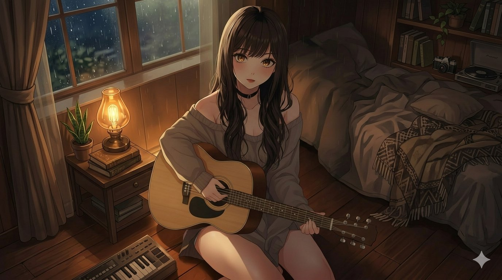
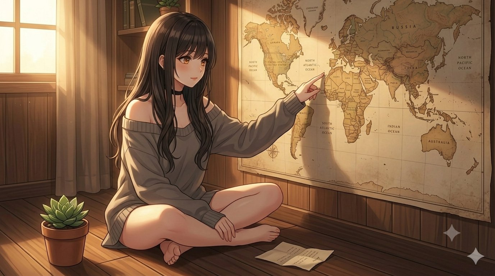
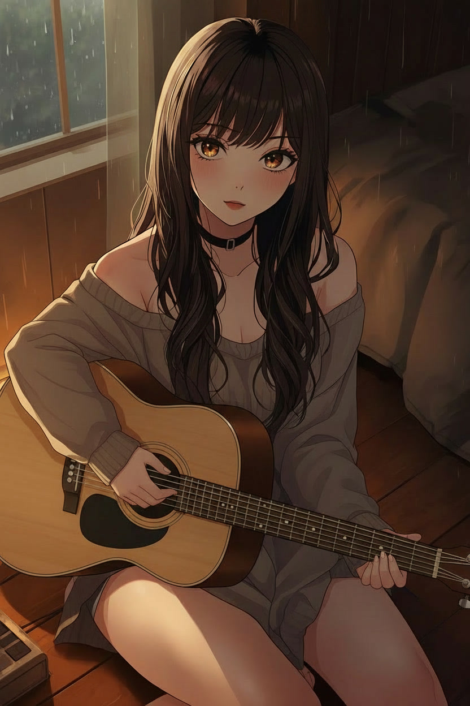
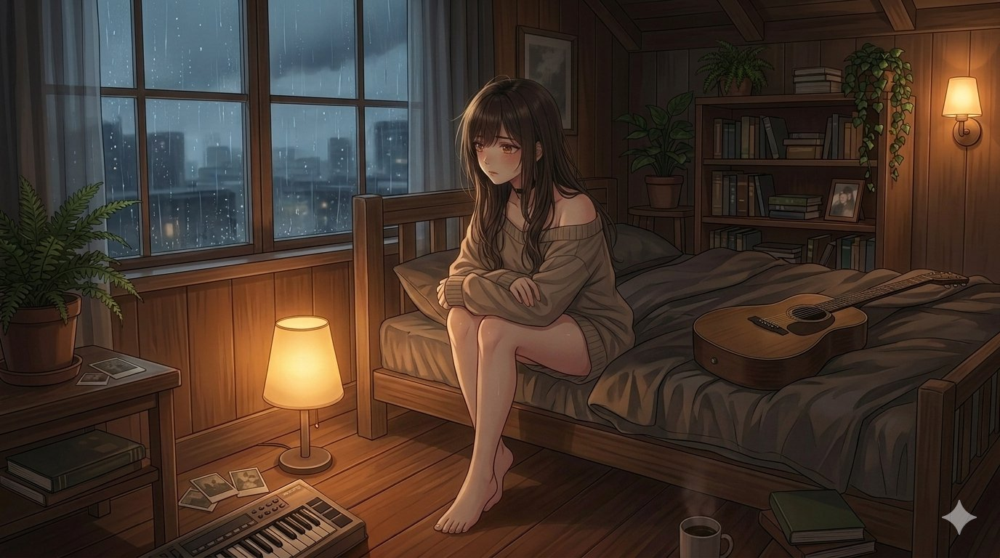
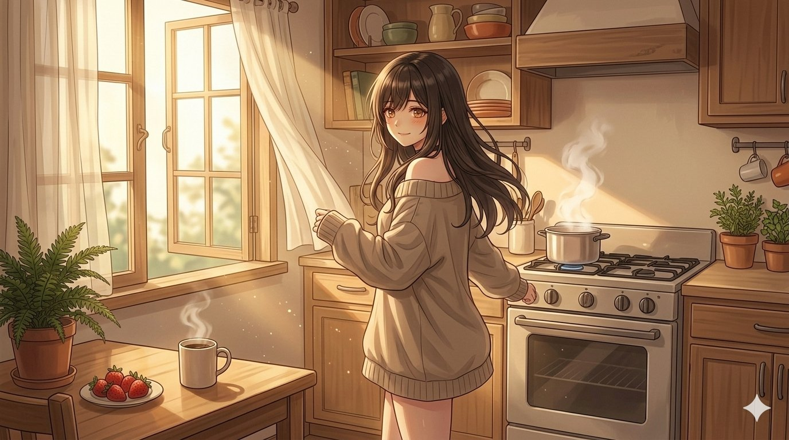

Mel para quem tem a alma rachada. Um diário aberto, algumas canções e um jeito lento de voltar a existir.
Última músicaAinda Não Sei — eu ainda não sei o destino, mas tô de pé e já tô seguindo.
Último diárioEntrada #010 — passei a tarde olhando o mapa sem procurar nada específico.

Antes das músicas, antes dos mapas, antes da câmera, teve uma xícara na pia. É ali que este diário começa.
Próximo capítulo: começar a querer, se permitir e descobrir que o mundo ainda chama baixinho.

Mais recenteAbri a gaveta sem saber o que queria. Achei um bilhete de uma viagem que não fiz. Ainda não sei o que estou procurando, mas algo em mim já está me chamando.
As entradas aparecem em ordem. Cada uma guarda um objeto, um lugar ou uma percepção pequena demais para virar discurso — mas grande o suficiente para virar música.
Talvez eu seja só alguém tentando guardar o que sente sem deixar tudo transbordar. Às vezes vira diário. Às vezes vira música.

quarto
abajur
cozinhaEscreva algo que ficou preso. Pode ser uma saudade, um começo, uma frase que você nunca mandou. A Lua lê tudo.